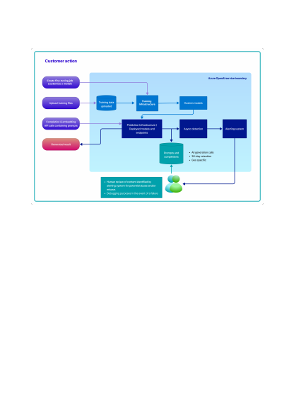

3. How the Azure OpenAI Service and Microsoft personnel analyze prompts and
completions for abuse, misuse or harmful content generation, or for debugging
purposes in the event of a failure.
The training data (prompt-completion pairs) submitted to the Fine-tunes API through
the Azure OpenAI Studio is pre-processed using automated tools for quality checking
including a data format check. The training data is then imported to the model training
component on the Azure OpenAI platform. During the training process, the training
data is decomposed into batches and used to modify the weights of the OpenAI
models.
Training data provided by the customer is only used to fine-tune the customer's model
and is not used by Microsoft to train or improve any Microsoft models.
Once a model deployment (consisting of a customer's fine-tuned model or a base
model endpoint) is provisioned in a customer's Azure OpenAI resource, the customer
can submit text prompts to the model using our Completions or Embeddings operations
Training data for purposes of fine-tuning an OpenAI
model
Text prompts to generate completions and embeddings
results